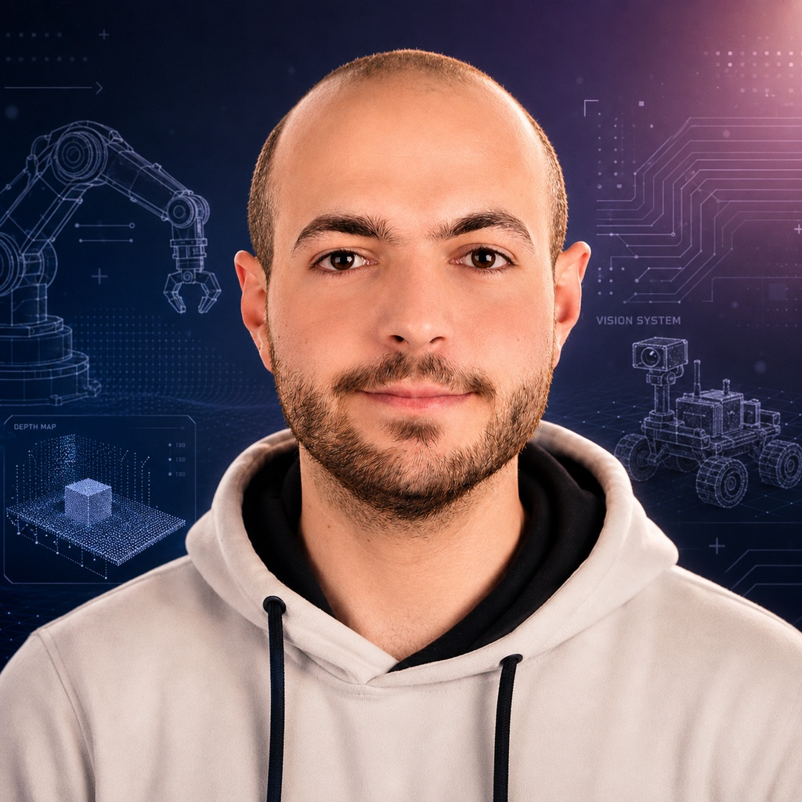

I am a Master's student in Medical Robotics Engineering, focused on robotics, RGB-D perception, 3D reconstruction, ROS 2, and medical robotic systems. My work connects computer vision, robotic sensing, calibration, and real-world system integration.
I am interested in the development of intelligent robotic systems for medical and industrial applications. My current work focuses on robotic RGB-D scanning, surface reconstruction, hand-eye calibration, and integrating perception pipelines with robotic platforms.
I enjoy working at the intersection of robotics, computer vision, and software engineering, especially when building complete systems that move from sensing to reconstruction and robotic execution.
Development of a pipeline for scanning objects with an RGB-D camera, refining depth data, fusing multiple views, and generating accurate 3D meshes.
Design of a ROS 2-based architecture for robotic surface scanning, including acquisition, segmentation, depth refinement, fusion, and mesh generation.
Integration of camera calibration and robot pose data to estimate transformations between the camera and robotic arm coordinate systems.
Master's-level work in robotics, perception, control, and medical robotic systems, with practical experience in research-oriented development.
Experience with RGB-D cameras, segmentation, depth refinement, reconstruction pipelines, and experimental validation of 3D scanning systems.
Practical work with ROS 2, RealSense cameras, KUKA robotic arms, calibration workflows, and real robotic system setup.
I am open to research, internship, and robotics engineering opportunities related to medical robotics, perception, and robotic system integration.